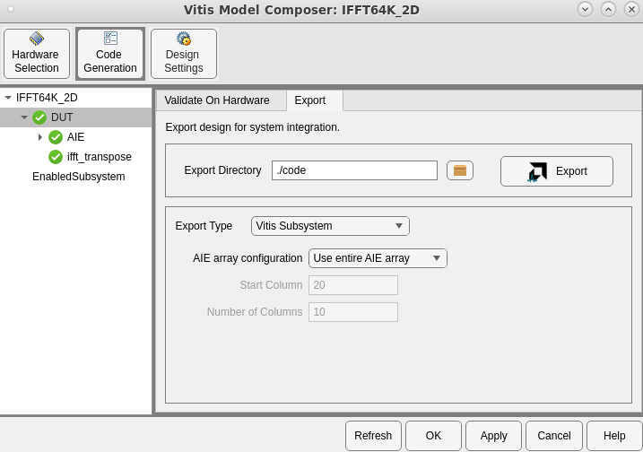
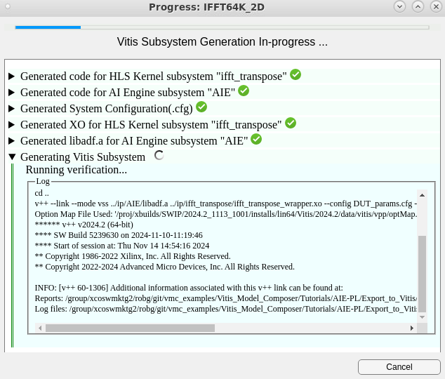
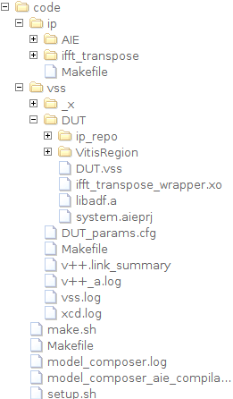
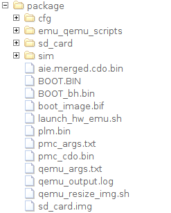

This tutorial will show how to export a heterogeneous design (AI Engine + PL) to Vitis as a Vitis Subsystem (VSS).
This tutorial uses the example design 64K-Pt IFFT @ 2 Gsps Using a 2D Architecture.
The figure below shows a block diagram of a 64k-point 2D IFFT hardware design implemented in Versal using AI Engines and PL. The design targets a throughput of 2 GSPS.
The IFFT operation is performed by AI Engine kernels, 5 each for each data dimension. The results of the first dimension are transposed by an HLS kernel implemented in PL.
For more details on the design, refer to the Vitis Model Composer example and the Design Example from Vitis-Tutorials.
Open the model IFFT64K_2D.slx and examine the DUT subsystem, which contains an HLS Kernel and an AI Engine subsystem.

When the model runs, the scope displays the real and imaginary output of the IFFT, which is compared to the original input signal.

To export the design as a VSS:
Double-click the Vitis Model Composer Hub block.
Select the DUT subsystem and the Export tab.
Select an Export Type of Vitis Subsystem.

The default configuration is to use the entire AI Engine array for the generated design. You can also specify Enable array partition to target the generated design to specific columns in the AIE array. This is useful if the generated AIE graph is to be combined with other graphs later on. For more information see Compile AI Engine Graph for Independent Partitions in the AI Engine Tools and Flows User Guide (UG1076).
Vitis Model Composer generates the following:
After generating these products, Vitis Model Composer also invokes the Vitis compiler (v++) to generate a Vitis Subsystem. This will take a few minutes.

After code generation is complete, the products can be viewed in the code folder.

ip folder contains subfolders for each subsystem (AI Engine or HLS Kernel) in the design.AIE contains the generated code and libadf.a for the AI Engine subsystem.ifft_transpose contains the generated code and compiled kernel (.xo) for the transpose HLS Kernel.vss folder contains the files used to generate the Vitis Subsystem.DUT folder contains the VSS itself. This folder contains the files necessary to use the VSS with the Vitis linker. The libadf.a and .xo are copied here, along with a DUT.vss file providing information about the VSS.In the next section, we will link and package this VSS with an existing Vitis project.
This tutorial provides a Vitis project, consisting of:
hls_src/ifft_dma_src, hls_src/ifft_dma_sinkdata/sig_i.txt, data/sig_o.txtps_apps/host.cppvitis/system.cfgTo see how to integrate the VSS, we will highlight 3 aspects of the project: the host application, the system configuration file, and how the Vitis linker and packager are invoked in the Makefile.
Open ps_apps/host.cpp to view the host application source code.
The host application is responsible for loading and starting the AI Engine graph and the PL data movers. Because the VSS contains the AI Engine graph, the host application must reflect the graph name contained in the VSS.
Find the section of code labeled Load and Run AIE graph.
// ------------------------------------------------------------
// Load and Run AIE graph
// ------------------------------------------------------------
auto my_graph = xrt::graph(my_device, xclbin_uuid, "mygraph");
std::cout << STR_PASSED << "auto my_graph = xrt::graph(my_device, xclbin_uuid, \"mygraph\")" << std::endl;
my_graph.reset();
std::cout << STR_PASSED << "my_graph.reset()" << std::endl;
my_graph.run(NUM_ITER);
std::cout << STR_PASSED << "my_graph.run( NUM_ITER=" << NUM_ITER << " )" << std::endl;
This code calls the XRT API to load and run the AIE graph. The name of the graph, mygraph, comes from the generated AI Engine source code (see code/ip/AIE/src/AIE.cpp). mygraph is a default name provided by Vitis Model Composer.
Open vitis/system.cfg to view the system configuration file.
Normally, this file instantiates all the PL kernels in the design. However, because the transpose kernel is provided in the VSS, only the data mover PL kernels are instantiated here.
# ------------------------------------------------------------
# HLS PL Kernels:
# ------------------------------------------------------------
# Sources/Sinks Data Movers to/from LPDDR/PL:
nk = ifft_dma_src_wrapper:1:dma_src
nk = ifft_dma_snk_wrapper:1:dma_snk
This file also describes connectivity between the PL kernels and the AI Engine. However, because connections within the DUT are handled by the VSS, this file only contains connections that occur between the VSS (DUT), data movers, and DDR.
# ------------------------------------------------------------
# AXI Stream Connections (PL to AIE)
# ------------------------------------------------------------
# LPDDR to PL DMA SOURCE:
sp=dma_src.mem:LPDDR
# PL DMA Source to AIE:
sc = dma_src.sig_o_0:ai_engine_0.In1
sc = dma_src.sig_o_1:ai_engine_0.In2
sc = dma_src.sig_o_2:ai_engine_0.In3
sc = dma_src.sig_o_3:ai_engine_0.In4
sc = dma_src.sig_o_4:ai_engine_0.In5
# AIE TO PL DMA SINK:
sc = ai_engine_0.Out1:dma_snk.sig_i_0
sc = ai_engine_0.Out2:dma_snk.sig_i_1
sc = ai_engine_0.Out3:dma_snk.sig_i_2
sc = ai_engine_0.Out4:dma_snk.sig_i_3
sc = ai_engine_0.Out5:dma_snk.sig_i_4
# PL DMA SINK to LPDDR
sp=dma_snk.mem:LPDDR
The AI Engine port names (In1, Out, etc.) come from the generated AI Engine source code (and ultimately the Simulink model), which can be viewed at code/ip/AIE/src/AIE.h.
Open the file vitis/Makefile. This file automates invoking the Vitis toolchain (v++) to link and package the project.
Find the ${BUILD_DIR}/${XSA} target, which invokes the Vitis linker.
${BUILD_DIR}/${XSA}: ${XO} ${SYSTEM_CFG}
cd ${BUILD_DIR} && \
v++ --link --debug --save-temps \
--target ${TARGET} \
--platform ${PLATFORM} \
$(addprefix --config ../, ${SYSTEM_CFG}) \
$(addprefix ../, ${XO}) \
$(addprefix ../, ${VSS}) \
--output ${XSA} \
2>&1 | tee vpp_link.log
This target invokes v++ using the --link option, and specifies a target (hw or hw_emu) and platform (xilinx_vck190_base_202420_1 in this case). The linker takes the system configuration file, data mover PL kernels, and VSS as inputs to produce an XSA. The inputs to the linker are specified in the Makefile as follows:
XO := ../hls_src/ifft_dma_src/ifft_dma_src_wrapper.xo \
../hls_src/ifft_dma_snk/ifft_dma_snk_wrapper.xo
VSS := ../code/vss/DUT/DUT.vss
SYSTEM_CFG := system.cfg
Note that the VSS is pulled from the code folder you generated earlier from Vitis Model Composer.
The ${SD_CARD} target invokes the Vitis packager.
${SD_CARD}: ${BUILD_DIR}/${XSA} ${PS_EXE} ${KERNEL_IMAGE} ${ROOTFS} ${STIMULUS_IO}
cd ${BUILD_DIR} && \
v++ --package --debug --save-temps \
--target ${TARGET} \
--platform ${PLATFORM} \
--package.out_dir ${SD_CARD} \
--package.boot_mode=sd \
--package.image_format=ext4 \
--package.kernel_image=${KERNEL_IMAGE} \
--package.rootfs=${ROOTFS} \
--package.defer_aie_run \
${XSA} \
$(addprefix ../, ${VSS}) \
$(addprefix --package.sd_file=../, ${PS_EXE}) \
$(addprefix --package.sd_file=../,${STIMULUS_IO}) \
$(addprefix --package.sd_file=../,embedded_exec.sh) \
2>&1 | tee vpp_pack.log
This target creates an sd_card.img that can be loaded onto a board, in this case a VCK190. The packager takes as inputs the VSS and the XSA that was generated by the linker.
The Makefile contained in this folder invokes other Makefiles in the project to build each component, then link and package the overall project.
NOTE: To build the Vitis project, make sure you have completed the following steps:
- Configure your environment to run Vitis.
- Set the
PLATFORM_REPO_PATHSenvironment variable to point to thebase_platformsfolder inside the Vitis installation directory.- Download and install the Common Images for Embedded Vitis Platforms.
- Set the environment variable
COMMON_IMAGE_VERSALto the full path where you have downloaded the common images.
make all TARGET=hw_emu in this folder in a terminal window to build and package the project for hardware emulation.The build process will take some time. When complete, the outputs will appear in a new folder named package.

In addition to the sd_card.img, a script launch_hw_emu.sh is created to automate launching of the hardware emulator.
package folder, launch hardware emulation as follows: ./launch_hw_emu.sh -run-app embedded_exec.sh.The emulator will start, and the hardware image will boot into Linux. The contents of the SD card image are displayed, and the vitis/embedded_exec.sh script will automatically run to launch the host application.
versal-rootfs-common-20242:/mnt# INFO:Running embedded_exec.sh
Run app command sent to console
ls
BOOT.BIN a.xclbin embedded_exec.sh sig_i.txt
Image boot.scr host.exe sig_o.txt
versal-rootfs-common-20242:/mnt# ./embedded_exec.sh
As the host application runs, status messages are printed to the display as the AI Engine graph and PL kernels start. Eventually the host application will wait while the kernels execute:
INFO: Waiting for kernels to end...
It will take several minutes for the kernels to execute in hardware emulation. When the kernels finish, the host application will compare the DUT output to the golden reference on a sample-by-sample basis. If the results match, the simulation will pass.
ss: 65532 Gld: 8388273 -12839 Act: 8388273 -12839 Err: 0 0
ss: 65533 Gld: 8388344 -9502 Act: 8388344 -9502 Err: 0 0
ss: 65534 Gld: 8388390 -6419 Act: 8388390 -6419 Err: 0 0
ss: 65535 Gld: 8388462 -3082 Act: 8388462 -3082 Err: 0 0
Level: 16384
Max Error: 256
--- PASSED ---
Congratulations! In this tutorial, you saw how to export a heterogeneous design (AI Engine + PL) to Vitis as a Vitis Subsystem (VSS) and build a complete design targeting the board.
© Copyright 2024 Advanced Micro Devices, Inc.